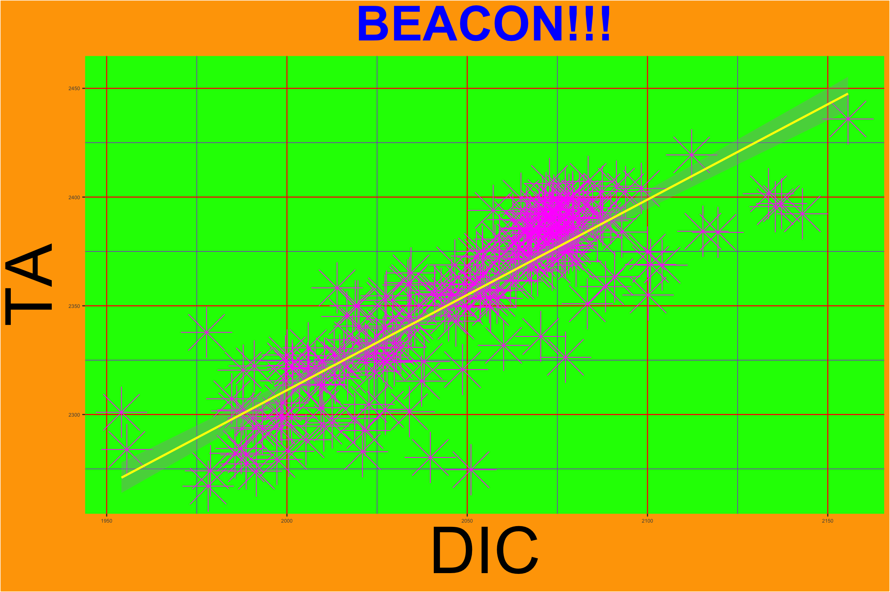
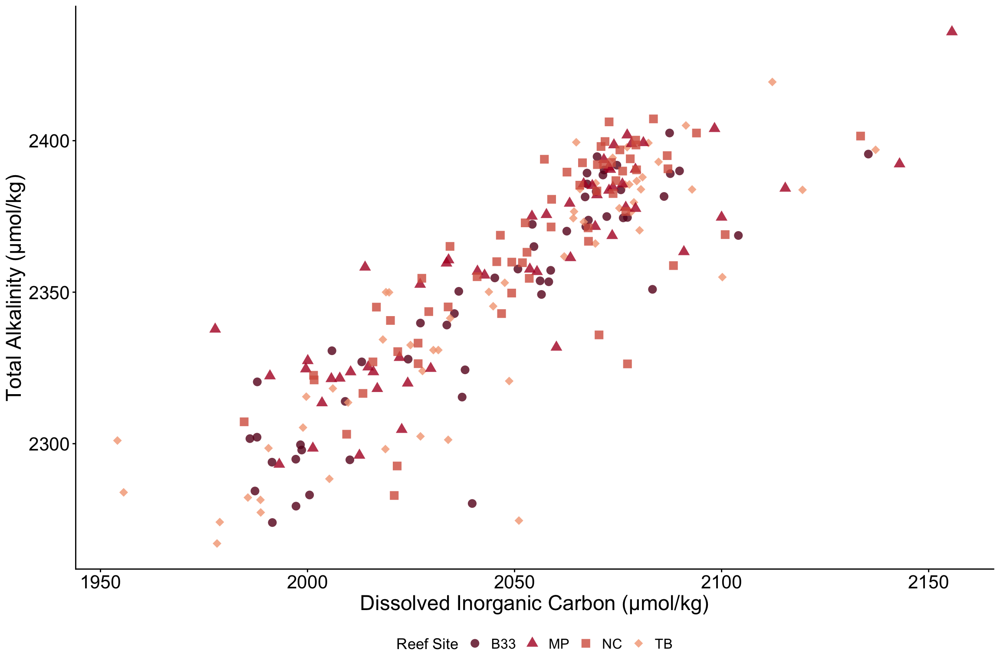

── Attaching core tidyverse packages ──────────────────────── tidyverse 2.0.0 ──
✔ dplyr 1.2.1 ✔ readr 2.2.0
✔ forcats 1.0.1 ✔ stringr 1.6.0
✔ ggplot2 4.0.3 ✔ tibble 3.3.1
✔ lubridate 1.9.5 ✔ tidyr 1.3.2
✔ purrr 1.2.2
── Conflicts ────────────────────────────────────────── tidyverse_conflicts() ──
✖ dplyr::filter() masks stats::filter()
✖ dplyr::lag() masks stats::lag()
ℹ Use the conflicted package (<http://conflicted.r-lib.org/>) to force all conflicts to become errors
library(here)
here() starts at /Users/carolinamelendezdeclet/R Projects/Melendez-Declet
This loads the libraries I need for my data analysis/plotting.
Load Data
beacon <-read_csv(here("GoodPlotBadPlot","Data","beacon_data.csv")) |>filter(ReefSiteName!="}") # Had one bad data point, so I filtered it out
Rows: 245 Columns: 9
── Column specification ────────────────────────────────────────────────────────
Delimiter: ","
chr (1): ReefSiteName
dbl (8): Latitude, Longitude, Date, DecimalDate, Temperature, Salinity, TA, DIC
ℹ Use `spec()` to retrieve the full column specification for this data.
ℹ Specify the column types or set `show_col_types = FALSE` to quiet this message.
This dataset is from the BErmuda ocean Acidification and COral reef iNvestigation Project (https://www.bco-dmo.org/project/2190). This project collected seawater carbonate chemistry parameters from four sites from the Bermuda coral reef platform: Bouy 33, Tyne’s Bay, Mid Platform, and North Channel. The actual CSV file was given to me by Dr. Travis Courtney in his R Studio course in Fall 2025.
Warning: Removed 20 rows containing non-finite outside the scale range
(`stat_smooth()`).
Removed 20 rows containing missing values or values outside the scale range
(`geom_point()`).

Figure 1: Ugliest DIC vs TA Plot Ever
Figure 1 is a good example of bad data visualization because the design makes it super difficult to see the relationship between dissolved inorganic carbon and total alkalinity.
Terrible background colors: The bright orange and neon green are distracting and make the figure hard to look at.
Missing information: The abbreviations DIC and TA are not defined, and I forgot to include their units (µmol/kg).
Ugly title: The title is not informative, uses a random color that doesn’t match the rest of the figure, and has unnecessary exclamation points (not professional for publication)
Overlapping data points: The points overlap a lot, and the colors and shapes make it even harder to see individual observations.
Tiny axis text: The axis tick labels are way too small, making it difficult to read the actual values.
Too many gridlines: Adds even more clutter & it has crazy colors! They don’t even match.
My eyes hurts. I don’t think any journal reviewer would approve! #notcute
Good Plot
GoodPlot <- beacon |>ggplot(aes(x=DIC, y= TA, shape =ReefSiteName, color=ReefSiteName, group=ReefSiteName)) +#I want shapes for the reef sitesgeom_point(size =3, alpha =0.8, stroke =0.8) +scale_color_manual(values =c("#67001f", "#b2182b", "#d6604d", "#f4a582"))+scale_shape_manual(values=c(16,17,15,18))+# these numbers are shapes for each reef sitelabs(x="Dissolved Inorganic Carbon (µmol/kg)", y="Total Alkalinity (µmol/kg)", shape ="Reef Site", color ="Reef Site")+#Just learned that to change the legend title of a variable that has both a color & shape, you have to use color and shape theme_classic()+theme(legend.position ="bottom",axis.text =element_text(size=16),axis.title =element_text(size=18),legend.title=element_text(size=13),legend.text=element_text(size=12))GoodPlot
Warning: Removed 20 rows containing missing values or values outside the scale range
(`geom_point()`).
Warning: Removed 20 rows containing missing values or values outside the scale range
(`geom_point()`).

Figure 2
Figure 2 is a good example of data visualization because the design is simple, clean, and easier to see the relationship bewteen DIC and TA at the sites.
Simple background: The white background makes the figure look clean and allows the data to stand out.
Clear axis labels: Both axes include the full names of the water quality parameters AND their units.
No unnecessary title: I personally don’t like adding titles to my figures. I prefer to include it in the figure caption.
Better color choices: The different shades are easier to look at and help distinguish between reef sites without being too distracting.
Different shapes: Each reef site has a different point shape, and it makes it easier to identify observations from different sites.
Readable axis text: The axis labels and values are large enough for readers to see clearly.
Clear legend: The legend is placed at the bottom and helps readers identify which colors and shapes represent each reef site.
No gridlines: We didn’t even need it in the first place for our data visuals.
Publication ready!! Will still probably have to be edited from reviewer comments lol.